Entity-Relationship Model¶
开发ER model是为了方便数据库设计，它允许指定表示数据库整体逻辑结构的企业模式。
三个基本概念：
- Entity sets
- Relationship sets
- Attributes
Entity Sets¶
实体集(entity sets)是一组共享相同属性(attributes)的相同类型的实体(entities)。
Example¶
- Entity Sets customer and loan
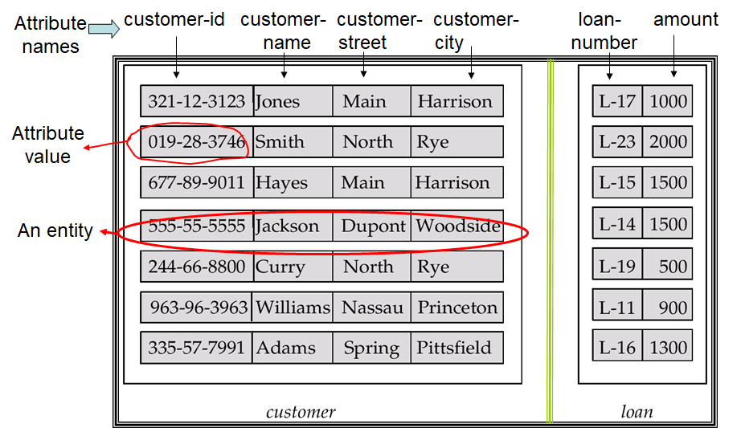
ER Diagram¶
实体集可以用图形表示如下：
- 矩形表示实体集。
- 在实体矩形内列出的属性
- 下划线表示主键属性
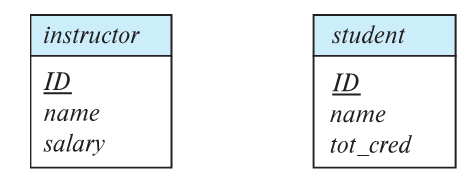
Attributes¶
属性分为以下几种类型：
- 简单属性(simple attributes)和复合属性(composite attributes)（如图中address）
- 单值属性(single-valued attributes)和多指属性(multi-valued attributes)（如图中phone_number用
[]表示） - 派生属性(derived attributes)：可以由其他属性计算得到（如图中age后加
()）

Composite Attributes¶
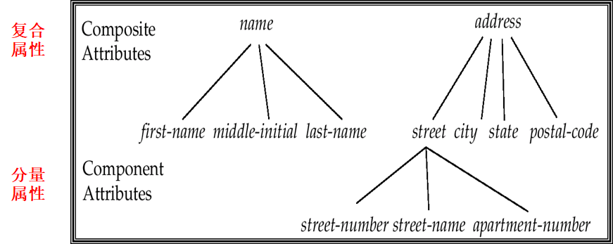
Relationship Sets¶
联系(relationship)是二个或多个不同类实体之间的关联。
一个联系集表示二个或多个实体集之间的关联 ，包含多个同类联系。
Example¶
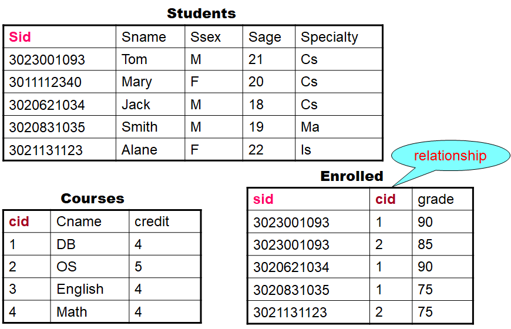
ER Diagram 表示¶
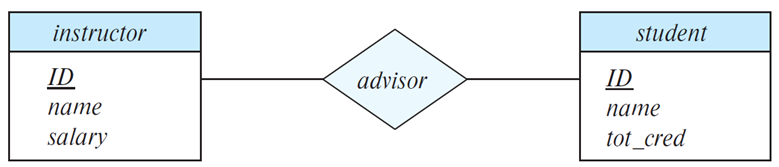
关系集属性¶
关系集也可以有自己的属性，在ER图中用虚线表示：
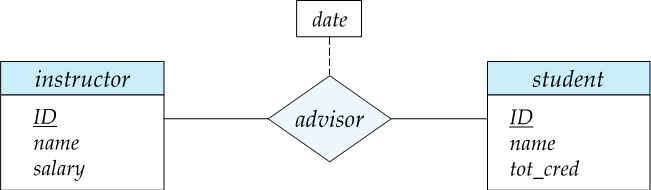
Roles¶
- 关系的实体集可以是相同的
- 实体集的每次出现都在关系中扮演一个角色(roles)
- 实体在关系中所起的作用称为该实体的角色。
- 如图中标签“course_id”和“preeq_id”被称为角色。
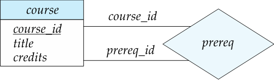
联系的度¶
一个关系集可以关联多个实体集，联系的度(Degree of a Relationship Set)指一个联系集中关联的实体集的数量。
大多数联系集都是二元的。一些看似非二元的关系可能使用二元关系更好地表示。
例如，一个三元关系的父母，一个孩子与他/她的父亲和母亲，最好被两个二元关系，父亲和母亲所取代。即 parents(he, she, child) => father(he, child), mother(she, child) 。使用两个二元关系能够允许部分信息，例如，只知道母亲。
但也有一些关系自然是非二元的，例如，works-on(employee, branch, job)。
多元转二元¶
通常，任何多元关系都可以通过创建人工实体集来使用二元关系表示。
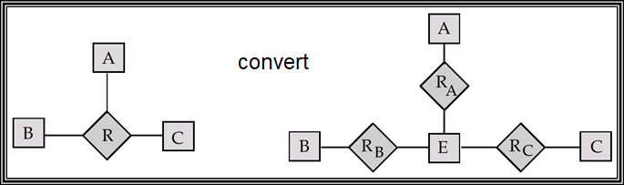
Example¶
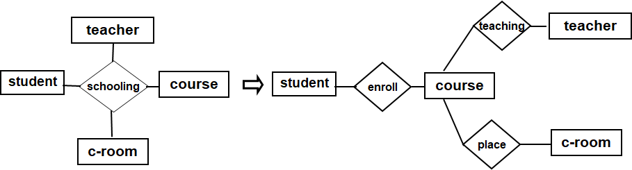
映射基数¶
映射基数(Mapping Cardinalities)用于表示一个联系集中，一个实体可以与另一类实体相联系的实体数目。其中数目是指最多一个还是多个。
在描述二元关系集是最有效。对于一个二元关系集，有以下几种类型：
-
One to one (1 : 1)，如：现任总统（总统，国家）
-
One to many (1 : n)，如：分班情况（班级，学生）
-
Many to one (n : 1)，如：就医（病人，医生）
-
Many to many (n : m)，如：选课（学生，课程）
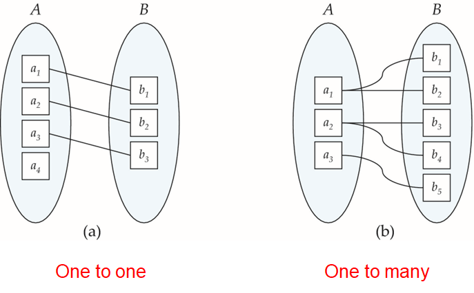
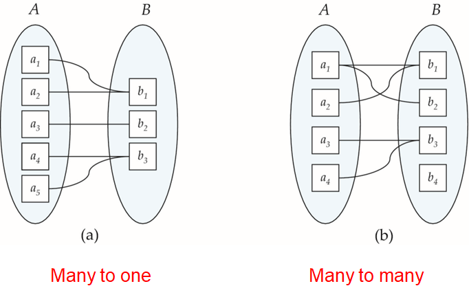
Note
允许存在某一些元素没有被映射到任何另外一个元素。
基数的ER图表示¶
在ER图中，使用\(\rightarrow\)来表示只能关联一个，用\(-\)来表示可以关联多个。
One to One¶
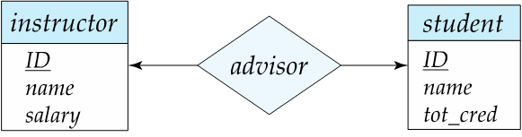
One to Many¶
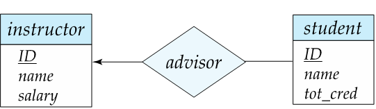
Many to Many¶
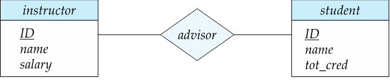
Note
最多允许在三元（或更大程度）关系中使用一个箭头来表示基数约束，若使用一支以上箭头容易造成混淆。
Total/Partial Participation¶
- Total 表示实体集中的每个实体至少参与关系集中的一个关系
- Partial 表示一些实体可能不参与关系集中的任何关系
在ER图中Partial用单线表示，Total用双线表示。
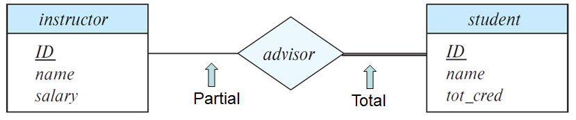
More Complex Constraints¶
使用一行可以有关联的最小和最大基数来表示，如 \(l..h\) 所示。其中 \(l\) 是最小基数，表示实体至少参与 \(l\) 个关系；\(h\) 是最大基数，表示实体至多参与 \(h\) 个关系。
- 最小基数为1则表示 Total Participation
- 最大基数为1则表示实体至多参与一个关系。
- 最大基数为*则表示没有任何限制。
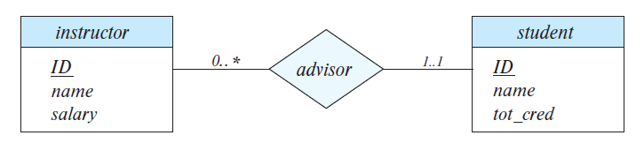
Keys¶
super key, candidate key, primary key等概念同关系模型。
关系集的keys¶
关系集的主码由所有参与关系的实体集的主码组合而成。
Note
这意味着一对实体在一个特定的关系集中最多只能有一个关系。
对于一下几种关系集，主码为：
- Many-to-Many：两边的主码的并集。
- Many-to-One：Many边的主码
- One-to-Many：Many边的主码
- One-to-One：任意一个参与集的主码
弱实体集¶
- 弱实体集(weak entity sets)依赖于其他实体集存在的实体集，即部分主码可以通过联系从其他实体集获取。被依赖的实体成为该弱实体集的标识性实体(identifying entity)，这样的联系被称为标识性联系(identifying relationship)。
- 弱实体集的主码为从标识性实体获取的属性以及其他分辨符(discriminator)（也被称为partial key）组成。
- 如果一个实体集不是弱实体集，那么这个实体集为强实体集(strong entity sets)。
如图所示，section中的course_id可以通过sec_course联系从course中获取，有获取的course_id和其他分辨符semester, year, sec_id共同组成section的主码。
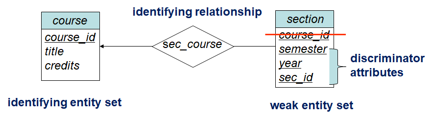
在ER图中，使用双层菱形来表示标识性联系：
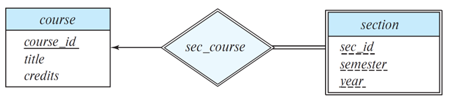
Note
每个弱实体集一定会有一个与其他实体集的标识性联系。
Extended E-R Features¶
Stratum of the entity set¶
- Specialization：即特殊化、具体化，是一种自上而下的设计流程：从一个高级实体一层一层向下拆分出更低级的子组。
- Generalization：即泛化、普遍化，是一种自下而上的设计流程：将多个具有相同特性的实体集组合成一个更高级的实体集。
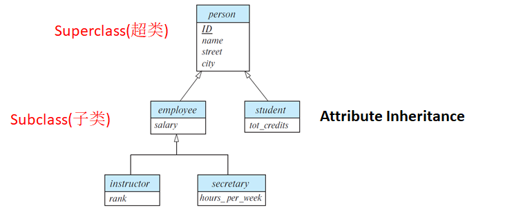
!Note Specialization和Generalization是彼此的简单反转；它们以同样的方式在E-R图中表示。
Constraints¶
条件约束¶
- Condition-defined (条件定义的)
- User-defined
重复约束¶
- Disjoint（不相交）：一个实体只能属于一个低级实体集。在E-R图中，在ISA三角形旁边写disjoint。
- Overlapping (可重叠)：一个实体可以属于多个低级实体集。
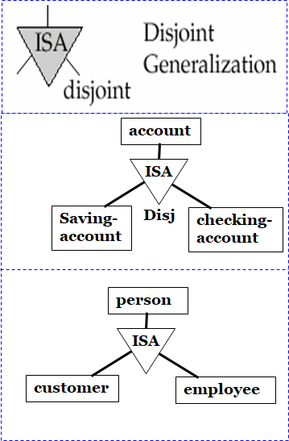
完全性约束¶
- Total：实体必须属于较低级别的实体集之一。
- Partial：实体不必属于较低级别的实体集之一。
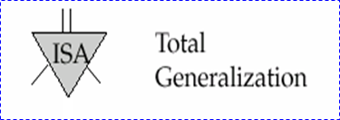
Aggregation¶
即把几个相互联系的实体集聚合成一个复合实体集，用于简化与其他实体集的联系。
Example¶
- 聚合前
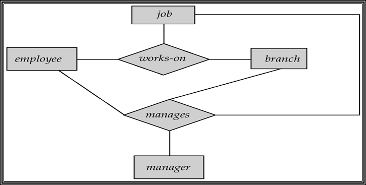
- 聚合后
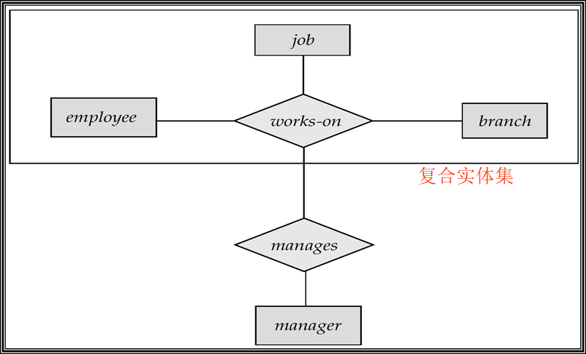
E-R Diagram¶
符号总结¶
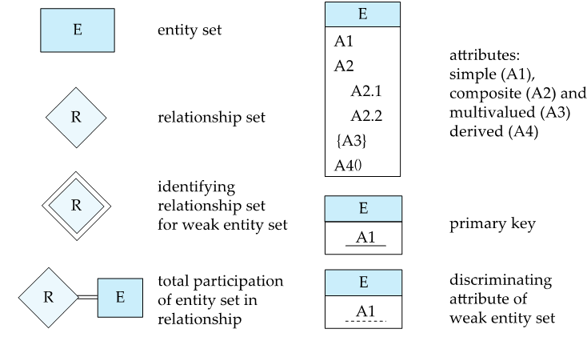
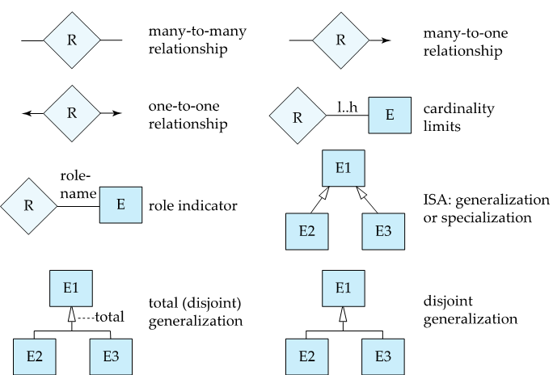
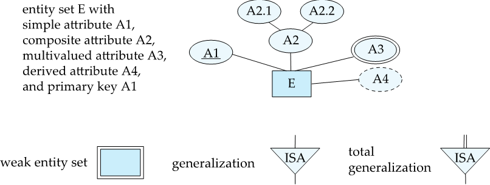
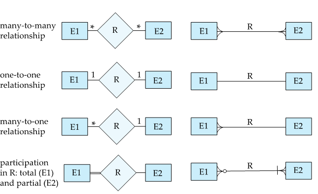
Example¶
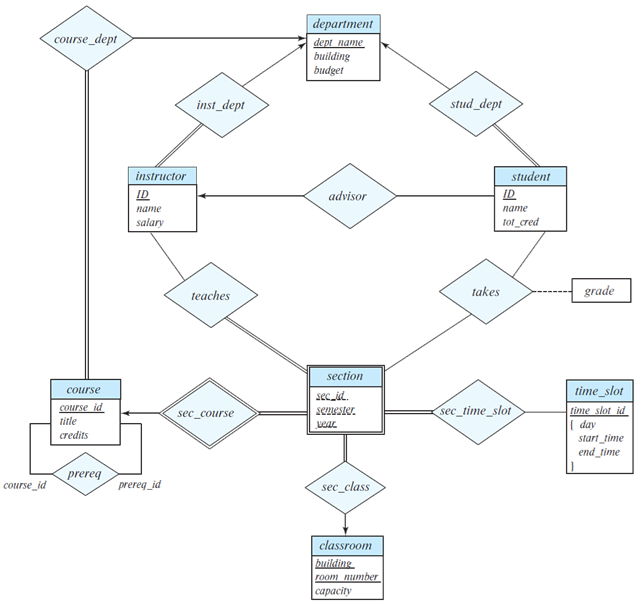
Design Issues¶
常见错误¶
- (a) dept_name作为department的主码，不允许再作为student的属性，而是可以通过联系来获取该属性。
- (b) assignmet marks是一个多值属性，不允许作为联系的属性
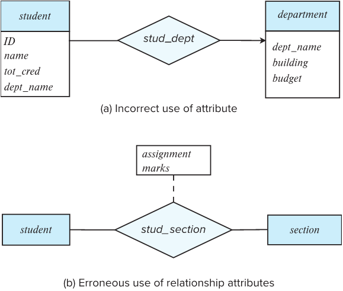
以下是对错误(b)的修正 ：
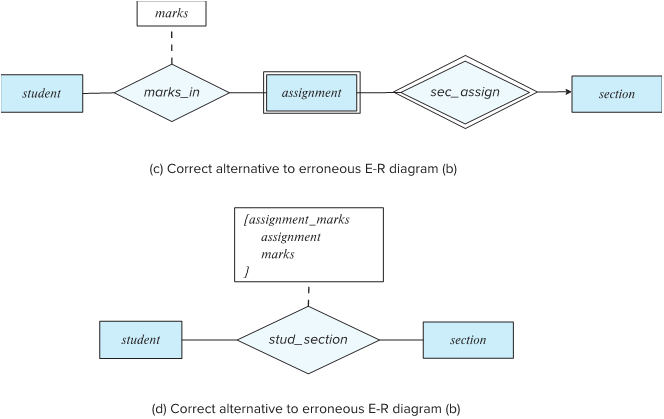
Reduction of an E-R Schema to Tables¶
符合E-R图的数据库可以用一组表来表示。对于每个实体集和关系集，都有一个唯一的表，该表被分配了相应的实体集或关系集的名称。
集合¶
- 强实体集：对应一张单独的表格
- 弱实体集：对应一张表格，属性包含标识性实体的属性。
Note
联系弱实体集及其标识性实体集的联系集对应的表是冗余的，即对应identifying relationship的表是多余的。
- 关系集：表示为一个表，其中包含两个参与实体集的主码（这里是外码）和关系集本身的任何描述性属性的列。
Note
对于多对一的联系，可以把联系所对应的表，合并到对应“多”端实体的表中。
属性¶
- 复合属性：对每一个子属性都创建一个单独的属性。（扁平化操作）
- 多值属性：创建另外一个单独的表格进行存储。
Specialization¶
Method1¶
- 高级的实体形成一个表。
- 每个较低级实体集形成一个表，包括较高级实体集的主键和本地属性。
缺点：获取信息时需要访问多个表。
Method2¶
- 为包含所有本地属性和继承属性的每个实体集形成一个表。
缺点：数据冗余较多。
Example¶
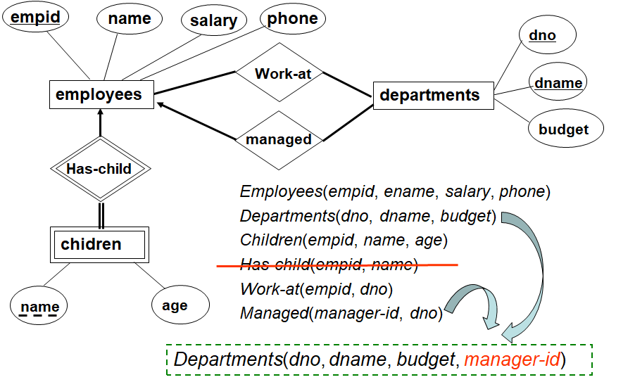